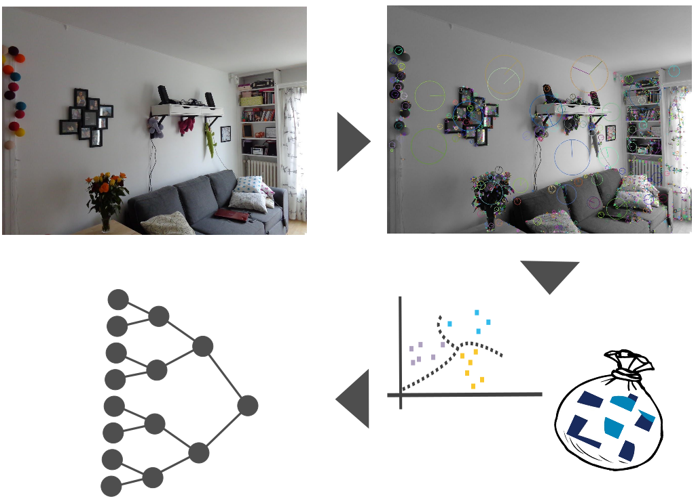
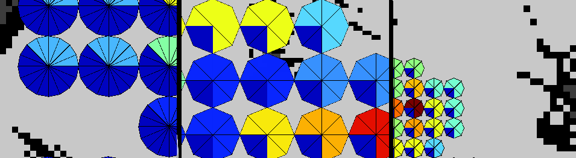
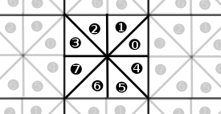

Les structures de données¶
Les structures de données décrites ici sont utilisées dans plusieurs parties du code de Kinav. Elles héritent toutes de la classe Resource, ce qui signifie que l’on peut les sauvegarder et les charger depuis des fichiers.
Toutes les structures évoquées dans ce chapitre ont une correspondance dans le répertoire “kinav/src/structure” du code source.
Dictionnaire (KDictionnary)¶
{kind=link}
Le dictionnaire est une structure de données hiérarchique, qui permet de regrouper des features - c’est à dire des caractéristiques visuelles - ensembles, sous forme de mots. Cette structure se présente sous la forme d’un arbre.
Ces caractéristiques visuelles sont obtenues à l’aide de la librairie OpenCV. Nous utilisons un feature detector pour détecter les features dans l’image puis un descriptor extractor pour obtenir les caractéristiques visuelles.
Pour créer un dictionnaire, nous collectons un certains nombre de caractéristiques visuelles, qui vont être ensuite triées et groupées selon plusieurs caractéristiques permettant de les hiérarchiser. Un dictionnaire est, en fait, une structure hiérarchique en forme d’arbre où chaque feuille représente un mot.
- Plusieurs paramètres sont nécessaires pour créer un dictionnaire :
- Un nombre de cluster : lorsque l’on a trop de features dans une branche, on coupe cette branche en groupe;
- Une profondeur : c’est-à-dire le nombre maximum d’itérations que peut atteindre un arbre;
- Une limite pour couper : a partir de combien de features il possible et pertinent de couper une feuille.
Le dictionnaire contient également les informations concernant les algorithmes utilisés dans OpenCV pour extraire les features et calculer les descripteurs.
L’intérêt du descripteur réside dans l’utilisation qui en fait par la suite, afin de déterminer le mot plus proche de chaque feature, en parcourant l’arbre (c’est-à-dire la feuille la plus proche de la feature contenant le mot).
La grille¶
La grille n’a pas de représentation en tant que telle. Il existe une classe Location (décrite ci-dessous) contenant les primitives nécessaires pour passer du monde continu aux coordonnées discrètes. La grille est composées de cellules, chaque cellule étant elle-même découpée en orientation(s). La résolution et le nombre d’orientation par cellule sont paramétrables. Pour donner un exemple : on pourrait utiliser les valeurs de 0.10 en résolution et 8 en orientation.
Le message Grid dans kinav_msgs/Grid est utilisé uniquement a des fins d’affichage.
Les emplacements (Location)¶
{kind=link}
Cette classe permet de discrétiser une position continue donnée par le robot.
Une position continue est constitué de . Elle correspond à une position dans la carte métrique.
Cette position identifiée par (x, y, theta), est alors réduite à une Location (x, y, orientation) qui dépend de la résolution utilisée lors de l’apprentissage mais également du nombre d’orientation.
Une position discrète est constituée de . Cette position peut également être représenté par un uint64_t nommé en tant que Location::ID.
{kind=link}
Voici quelques exemples d’utilisations de la classe :
int orientation_size = 8;
double resolution = 0.15;
Location location;
location.setLiterals(resolution, orientation_size, 123.34, 12.34, 3.14);
// to get the discrete position use the location interface :
std::cout<<location.x()<<" "<<location.y()<<" "<<int(location.orientation())<<std::endl;
// it's also possible to change values:
location.x() = 3;
// to get an unique id (uint64_t) :
Location::ID id = Location::toID(location);
// and reverse
Location another = Location::toLoc(id);
double x, y, theta;
another.getLiterals(resolution, orientation_size, x, y, theta);
Index (Index)¶
Index est une structure de données qui contient, pour une location, une liste de Word et un compteur pour chacun d’eux. La liste de Word définit l’ensemble des Words vu à l’emplacement de la cellule et de l’orientation. Le compteur permet de connaître le nombre de fois où le mot a été vu.
Voici un exemple de données que l’on pourrait trouver dans notre index :
| location x | location y | orientation | compteur | ||||||
|---|---|---|---|---|---|---|
| 0 | 0 | 0 | 10 | |||
| 1 | 0 | 3 | 3 | |||
| 1 | 6 | 7 | 2 | |||
Ce qui signifie que le mot 2120 a été vu à la Location {0, 0, 0} 10 fois, le mot 2120 a été vu à la Location {1, 0, 3} 3 fois, le mot 2120 a été vu à la Location {1, 6, 7} 2 fois.
Index inversé (InvertedIndex)¶
L’idée est d’associer à un mot du dictionnaire, une liste d’emplacement de la grille avec un score.
L’index inversé est une structue de données qui associe pour un mot donné (du dictionnaire), une liste de Location.
Chacune de ces locations, possède un score et une position dans l’image (x, y).
Cet index inversé permet ainsi de calculer les fréquences de mots dans la map.
| Word | x | y | score |
|---|---|---|---|
| 3384 | 120 | 340 | 0.078 |
| 9384 | 124 | 222 | 0.021 |
TF/IDF¶
et sont deux classes.
TF signifie Term Frequency. Associé à IDF il permet de pondérer une recherche d’informations. IDF signifie Inverse document Frequency, c’est une mesure de l’importance d’un mot par rapport à l’ensemble des mots de la grille.
Cette classe représente le nombre d’occurences des mots dans la grille. Pour chaque association Location, Word, un score est attribué correspondant à ce nombre d’occurences. TF est créé lors de l’apprentissage, puis utilisé lors de la relocalisation visuelle, permettant de pondérer le poids des mots. TF est une hash map de Location::ID et d’une sous-hash map de Word double. On dispose ici d’un score pour chaque Word et chaque cellule de la grille :
typedef hash_map<Location::ID, hash_map<Word, double> > TF;
IDF est une hash map de Word et double. Pour chaque mot, un score est calculé. IDF est juste une classe d’encapsulation de ce conteneur. Cette classe contient une liste de mot associé à un score :
typedef hash_map<Word, double> IDF;